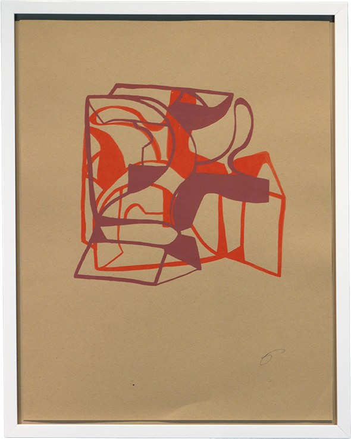

Tell Me What You See
Madron Gallery presents Tell Me What You See, a group exhibition featuring four contemporary Chicago artists; Jacob Futhey, Glen Gauthier, Kate Hendrickson, and Kara Cobb Johnson. On view March 26 through June 12, 2026, with an opening reception on Thursday, March 26th, 5:30 – 8:30 pm. The reception and exhibition are free and open to the public.
Paper: a flat plane of existence where boundaries are created by set dimensions defined by the physicality of the sheet; a reality where flat or irregular edges, hot or cold press, color, and weight are determining factors in not only the construction of an artwork, but also its presentation. In an age where artists are discovered by endless scrolling through social media, websites, online publications, and videos – the choice of paper – a physically often subtle support structure seems poignant. A quiet call to slow down, look closely -and explore the unknown. These four Chicago artists are creating artworks that challenge the viewer to look beyond the surface of the paper and discover the emotions that lie within their creations of photography, collage, and printmaking. Each artist has a dramatically different approach to their use of paper, but all four artistic practices are bound together by experimentation and multi-tiered creative processes that reexamine each medium.
Jacob Futhey (b. 1983) has described his artwork as “quiet companions, portals for pause.” Abstracting a composition in camera, it is only after the image is printed does Futhey begin to transform a piece. Archival ink jet photographs act as the base of his mixed media artworks, with the artist often using paint, pastels, colored pencils, grommets, and other materials in his artistic process. Futhey has exhibited his work at Second Story Studio, Chicago, Storm Print Studio, Evanston, IL, and Filter Photo, Chicago, IL.
Glen Gauthier (b. 1965) uses a wide range of printed ephemera in creating mixed media collages that address both personal childhood memories and ideals, as well as universal truths. Gauthier’s visual aids that are reflective and often sourced from 1950s Americana, include images of architecture, automobiles, tools, scientific ledgers, and books. A graduate of the University of Louisiana at Lafayette, Gauthier has exhibited his work in Dallas, Texas, Los Angeles, CA, New York, NY, and Chicago, IL.
Kate Hendrickson (b. 1952) combines the artforms of drawing and photography, creating digital compositions by layering and editing hand drawn color pencil illustrations in Photoshop, resulting in giclée prints on archival cold-press paper. Henrickson holds an MFA from the University of Denver, and has taught at Barat College, Forest Park, IL and the School of the Art Institute of Chicago, Chicago, IL. Her work has been exhibited at the Heller Museum, New York, NY, SPAACES, Sarasota, FL, Bridgeport Art Center, Chicago, Chicago, IL, as well as in Print Fairs at the McNay Fine Art Museum, San Antonio, TX, the Minneapolis Institute of Art ,Minneapolis, MN, and the Cleveland Museum of Art, Cleveland, OH.
Kara Cobb Johnson (b. 1976) is a Chicago-based artist, curator, and educator. Dedicated to creating conceptual pieces, Johnson uses everyday objects in all forms of her artistic practice, including installations, sculpture, and printmaking. Experimenting with the process and properties of screen printing, Johnson’s new work on paper explores the materiality and use of a paper bag. Johnson received a BA from Northeastern Illinois University and studied at the University of Chicago –Graham School of Continuing Liberal and Professional Studies. In July 2023, Johnson was awarded a Chicago Department of Cultural Affairs and Special Events Individual Artist Grant to create, curate, and coalesce new work for 2024. This is Johnson’s second group exhibition at Madron.
Madron is home to Madron Gallery, Madron Press, and the Skolnik family’s private art collection. The Skolnik family, the founders of Madron, is committed to supporting contemporary and Jewish artists, as well as acting as stewards of nineteenth and twentieth-century American art. Through scholarship-informed programming and en suite exhibitions, Madron has carved out a unique place in Chicago’s artistic landscape, sparking dialogue about the ongoing significance of nineteenth and twentieth-century art in today’s world.